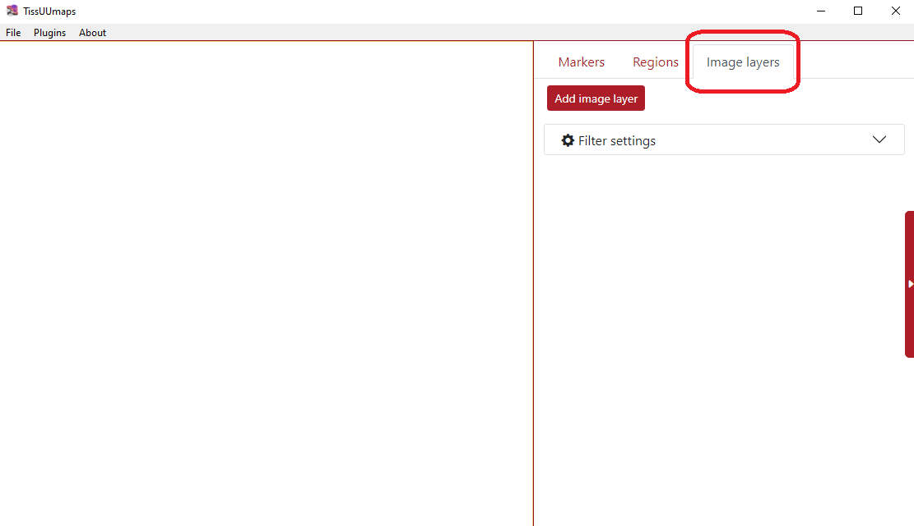
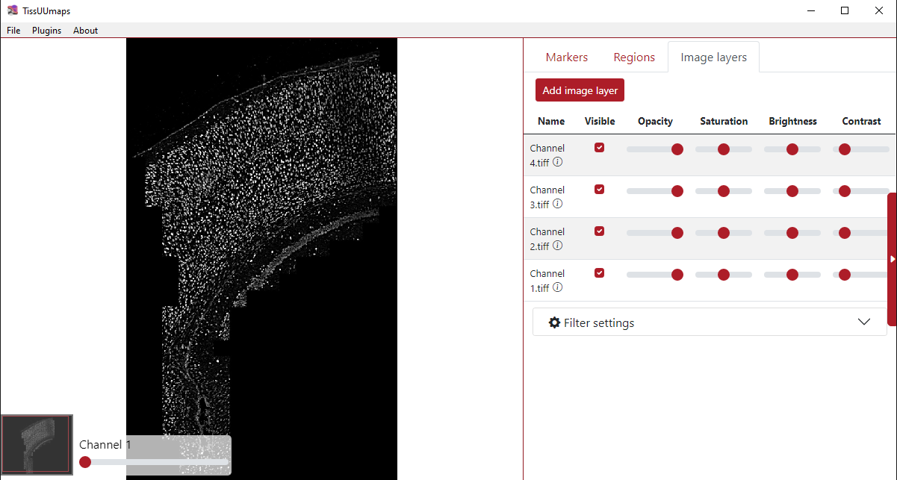
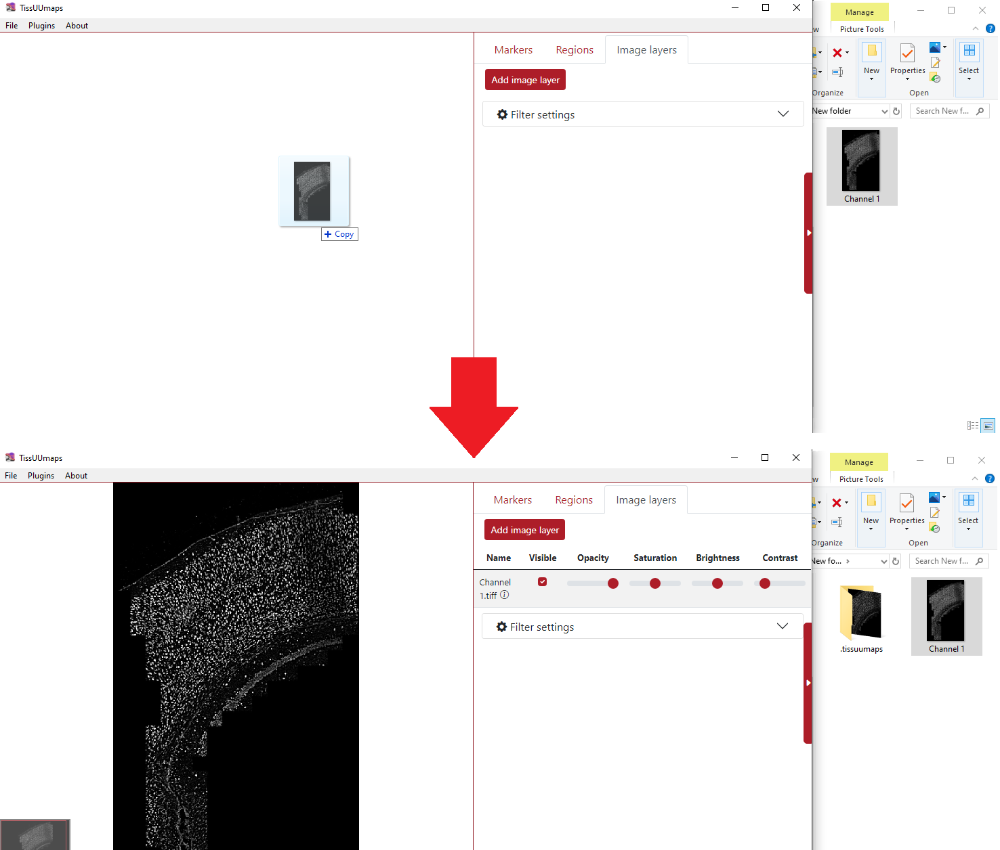
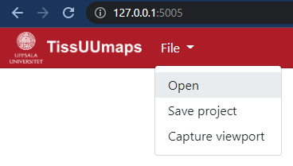
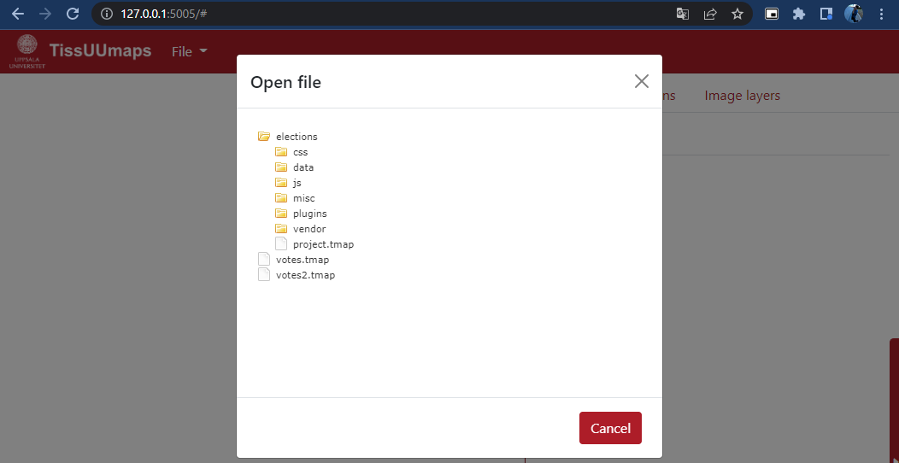
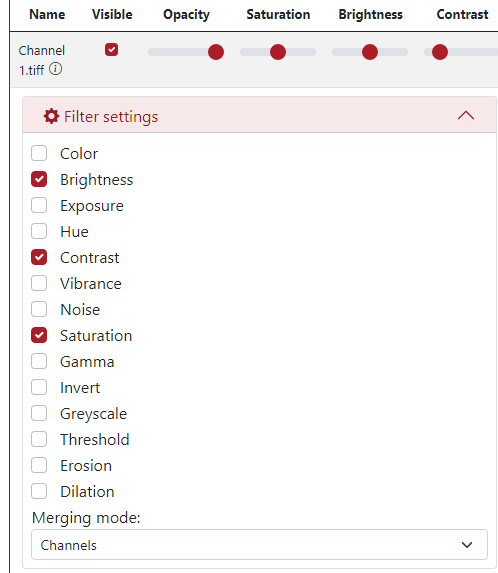

Images¶
Supported image formats¶
TissUUmaps can read whole slide images in any format recognized by the OpenSlide library:
Aperio (.svs, .tif)
Hamamatsu (.ndpi, .vms, .vmu)
Leica (.scn)
MIRAX (.mrxs)
Philips (.tiff)
Sakura (.svslide)
Trestle (.tif)
Ventana (.bif, .tif)
Generic tiled TIFF (.tif)
TissUUmaps will automatically convert any other format into a pyramidal tiff (in a temporary .tissuumaps folder created in the original image folder) using vips.
If your image fails to open, try converting it to tif format using an external tool.
Load images¶
You can load the images when you select the Image layer tab as you can see in the figure below: 
Then click the button Add image layer and select the desired image from your computer. Subsequently, the image is listed in the Image layer tab. You can load several images into TissUUmaps. 
You can also drag and drop the image from file explorer into TissUUmaps. 
Load images using TissUUmaps server¶
If you are running TissUUmaps in server mode and not through the GUI, you must specify an image folder in the command line:
python -m tissuumaps "/home/username/Documents/myImages/" -p 5005
You can then access your images from your web browser by accessing the url http://localhost:5005, and using the File > Open menu.


Apply filters¶
You can apply several filters to the images. The ones we can be adjusted by default are saturation, brightness, and contrast. Additionally, when opening the Filter settings menu, there are various other filters, such as exposure, noise, erosion, etc. When you check their box, they are automatically added to the filter panel above. The filter’s sliders can be adjusted so that the filter is applied at the desired intensity. Another option in filter settings is merging mode (bottom part), where you can merge the channels as a composite.
